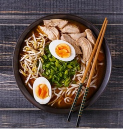
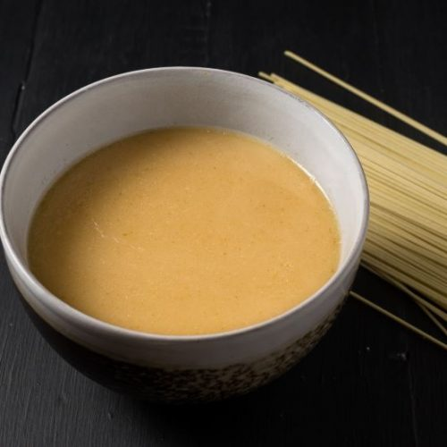

Vídeo de la preparación

Haz clic en la imagen para ver el vídeo completo.
Una receta paso a paso para preparar ramen auténtico en casa.

| Categoría | Ingredientes principales |
|---|---|
| Caldo | Carcasas de pollo, cebolletas, zanahoria, ajo, jengibre, agua y sal |
| Kaeshi | Miso rojo, aceite de sésamo, mirin, jengibre rallado, ajo rallado |
| Ramen | Fideos, huevos, cerdo |
| Acompañamiento | Narutomaki, alga nori, cebollino y espinacas |

Haz clic en la imagen para ver el vídeo completo.